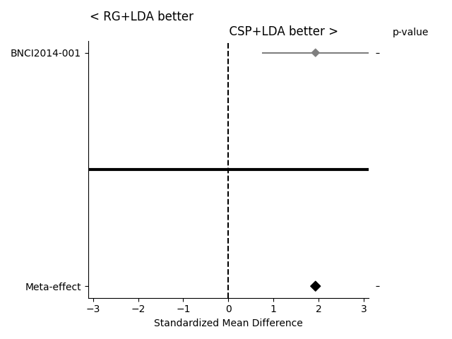

<!DOCTYPE html>

<html>
  <head>
    <meta charset="utf-8" />
    <meta name="viewport" content="width=device-width, initial-scale=1.0" />
    <title>Statistical Analysis &#8212; moabb 0.4.6 documentation</title>
    <link rel="stylesheet" href="../../_static/pygments.css" type="text/css" />
    <link rel="stylesheet" href="../../_static/bootstrap-sphinx.css" type="text/css" />
    <link rel="stylesheet" type="text/css" href="../../_static/gallery.css" />
    <link rel="stylesheet" type="text/css" href="../../_static/gallery-binder.css" />
    <link rel="stylesheet" type="text/css" href="../../_static/gallery-dataframe.css" />
    <link rel="stylesheet" type="text/css" href="../../_static/gallery-rendered-html.css" />
    <script id="documentation_options" data-url_root="../../" src="../../_static/documentation_options.js"></script>
    <script src="../../_static/jquery.js"></script>
    <script src="../../_static/underscore.js"></script>
    <script src="../../_static/doctools.js"></script>
    <link rel="index" title="Index" href="../../genindex.html" />
    <link rel="search" title="Search" href="../../search.html" />
<meta charset='utf-8'>
<meta http-equiv='X-UA-Compatible' content='IE=edge,chrome=1'>
<meta name='viewport' content='width=device-width, initial-scale=1.0, maximum-scale=1'>
<meta name="apple-mobile-web-app-capable" content="yes">
<script type="text/javascript" src="../../_static/js/jquery-1.12.4.min.js"></script>
<script type="text/javascript" src="../../_static/js/jquery-fix.js"></script>
<script type="text/javascript" src="../../_static/bootstrap-3.4.1/js/bootstrap.min.js"></script>
<script type="text/javascript" src="../../_static/bootstrap-sphinx.js"></script>

  </head><body>

  <div id="navbar" class="navbar navbar-inverse navbar-default navbar-fixed-top">
    <div class="container">
      <div class="navbar-header">
        <!-- .btn-navbar is used as the toggle for collapsed navbar content -->
        <button type="button" class="navbar-toggle" data-toggle="collapse" data-target=".nav-collapse">
          <span class="icon-bar"></span>
          <span class="icon-bar"></span>
          <span class="icon-bar"></span>
        </button>
        <a class="navbar-brand" href="../../index.html">
          moabb</a>
        <span class="navbar-text navbar-version pull-left"><b>0.4.6</b></span>
      </div>

        <div class="collapse navbar-collapse nav-collapse">
          <ul class="nav navbar-nav">
            
                <li><a href="../../whats_new.html">What's new</a></li>
                <li><a href="../../api.html">API</a></li>
                <li><a href="../index.html">Gallery</a></li>
                <li><a href="../../auto_tutorials/index.html">Tutorials</a></li>
            
            
              <li class="dropdown globaltoc-container">
  <a role="button"
     id="dLabelGlobalToc"
     data-toggle="dropdown"
     data-target="#"
     href="../../index.html">Site <b class="caret"></b></a>
  <ul class="dropdown-menu globaltoc"
      role="menu"
      aria-labelledby="dLabelGlobalToc"><ul>
<li class="toctree-l1"><a class="reference internal" href="../../whats_new.html">What’s new</a><ul>
<li class="toctree-l2"><a class="reference internal" href="../../whats_new.html#develop-branch">Develop branch</a></li>
<li class="toctree-l2"><a class="reference internal" href="../../whats_new.html#version-0-4-6-stable-pypi">Version - 0.4.6  (Stable - PyPi)</a></li>
<li class="toctree-l2"><a class="reference internal" href="../../whats_new.html#version-0-4-5">Version - 0.4.5</a></li>
<li class="toctree-l2"><a class="reference internal" href="../../whats_new.html#version-0-4-4">Version - 0.4.4</a></li>
<li class="toctree-l2"><a class="reference internal" href="../../whats_new.html#version-0-4-3">Version - 0.4.3</a></li>
<li class="toctree-l2"><a class="reference internal" href="../../whats_new.html#version-0-4-2">Version - 0.4.2</a></li>
<li class="toctree-l2"><a class="reference internal" href="../../whats_new.html#version-0-4-1">Version - 0.4.1</a></li>
<li class="toctree-l2"><a class="reference internal" href="../../whats_new.html#version-0-4-0">Version - 0.4.0</a></li>
<li class="toctree-l2"><a class="reference internal" href="../../whats_new.html#version-0-3-0">Version 0.3.0</a></li>
<li class="toctree-l2"><a class="reference internal" href="../../whats_new.html#version-0-2-1">Version 0.2.1</a></li>
<li class="toctree-l2"><a class="reference internal" href="../../whats_new.html#version-0-2-0">Version 0.2.0</a></li>
</ul>
</li>
</ul>
<p class="caption"><span class="caption-text">Main classes of MOABB:</span></p>
<ul>
<li class="toctree-l1"><a class="reference internal" href="../../datasets.html">Datasets</a><ul>
<li class="toctree-l2"><a class="reference internal" href="../../datasets.html#motor-imagery-datasets">Motor Imagery Datasets</a></li>
<li class="toctree-l2"><a class="reference internal" href="../../datasets.html#erp-datasets">ERP Datasets</a></li>
<li class="toctree-l2"><a class="reference internal" href="../../datasets.html#ssvep-datasets">SSVEP Datasets</a></li>
<li class="toctree-l2"><a class="reference internal" href="../../datasets.html#base-utils">Base &amp; Utils</a></li>
</ul>
</li>
<li class="toctree-l1"><a class="reference internal" href="../../evaluations.html">Evaluations</a><ul>
<li class="toctree-l2"><a class="reference internal" href="../../evaluations.html#id1">Evaluations</a></li>
<li class="toctree-l2"><a class="reference internal" href="../../evaluations.html#base-utils">Base &amp; Utils</a></li>
</ul>
</li>
<li class="toctree-l1"><a class="reference internal" href="../../paradigms.html">Paradigms</a><ul>
<li class="toctree-l2"><a class="reference internal" href="../../paradigms.html#motor-imagery-paradigms">Motor Imagery Paradigms</a></li>
<li class="toctree-l2"><a class="reference internal" href="../../paradigms.html#p300-paradigms">P300 Paradigms</a></li>
<li class="toctree-l2"><a class="reference internal" href="../../paradigms.html#ssvep-paradigms">SSVEP Paradigms</a></li>
<li class="toctree-l2"><a class="reference internal" href="../../paradigms.html#base-utils">Base &amp; Utils</a></li>
</ul>
</li>
<li class="toctree-l1"><a class="reference internal" href="../../pipelines.html">Pipelines</a><ul>
<li class="toctree-l2"><a class="reference internal" href="../../pipelines.html#id1">Pipelines</a></li>
<li class="toctree-l2"><a class="reference internal" href="../../pipelines.html#base-utils">Base &amp; Utils</a></li>
</ul>
</li>
<li class="toctree-l1"><a class="reference internal" href="../../analysis.html">Analysis</a><ul>
<li class="toctree-l2"><a class="reference internal" href="../../analysis.html#plotting">Plotting</a></li>
<li class="toctree-l2"><a class="reference internal" href="../../analysis.html#statistics">Statistics</a></li>
</ul>
</li>
</ul>
</ul>
</li>
              
                <li class="dropdown">
  <a role="button"
     id="dLabelLocalToc"
     data-toggle="dropdown"
     data-target="#"
     href="#">Page <b class="caret"></b></a>
  <ul class="dropdown-menu localtoc"
      role="menu"
      aria-labelledby="dLabelLocalToc"><ul>
<li><a class="reference internal" href="#">Statistical Analysis</a><ul>
<li><a class="reference internal" href="#results-generation">Results Generation</a></li>
<li><a class="reference internal" href="#create-pipelines">Create Pipelines</a></li>
<li><a class="reference internal" href="#evaluation">Evaluation</a></li>
<li><a class="reference internal" href="#moabb-plotting">MOABB Plotting</a></li>
<li><a class="reference internal" href="#statistical-testing-and-further-plots">Statistical Testing and Further Plots</a></li>
</ul>
</li>
</ul>
</ul>
</li>
              
            
            
            
            
            
          </ul>

          
            
<form class="navbar-form navbar-right" action="../../search.html" method="get">
 <div class="form-group">
  <input type="text" name="q" class="form-control" placeholder="Search" />
 </div>
  <input type="hidden" name="check_keywords" value="yes" />
  <input type="hidden" name="area" value="default" />
</form>
          
        </div>
    </div>
  </div>

<div class="container">
  <div class="row">
    <div class="body col-md-12 content" role="main">
      
  <div class="sphx-glr-download-link-note admonition note">
<p class="admonition-title">Note</p>
<p>Click <a class="reference internal" href="#sphx-glr-download-auto-examples-advanced-examples-plot-statistical-analysis-py"><span class="std std-ref">here</span></a>
to download the full example code</p>
</div>
<div class="sphx-glr-example-title section" id="statistical-analysis">
<span id="sphx-glr-auto-examples-advanced-examples-plot-statistical-analysis-py"></span><h1>Statistical Analysis<a class="headerlink" href="#statistical-analysis" title="Permalink to this headline">¶</a></h1>
<p>The MOABB codebase comes with convenience plotting utilities and some
statistical testing. This tutorial focuses on what those exactly are and how
they can be used.</p>
<div class="highlight-default notranslate"><div class="highlight"><pre><span></span><span class="c1"># Authors: Vinay Jayaram &lt;vinayjayaram13@gmail.com&gt;</span>
<span class="c1">#</span>
<span class="c1"># License: BSD (3-clause)</span>
<span class="c1"># sphinx_gallery_thumbnail_number = -2</span>

<span class="kn">import</span> <span class="nn">matplotlib.pyplot</span> <span class="k">as</span> <span class="nn">plt</span>
<span class="kn">from</span> <span class="nn">mne.decoding</span> <span class="kn">import</span> <a href="https://mne.tools/stable/generated/mne.decoding.CSP.html#mne.decoding.CSP" title="mne.decoding.CSP" class="sphx-glr-backref-module-mne-decoding sphx-glr-backref-type-py-class"><span class="n">CSP</span></a>
<span class="kn">from</span> <span class="nn">pyriemann.estimation</span> <span class="kn">import</span> <a href="https://scikit-learn.org/stable/modules/generated/sklearn.base.BaseEstimator.html#sklearn.base.BaseEstimator" title="sklearn.base.BaseEstimator" class="sphx-glr-backref-module-sklearn-base sphx-glr-backref-type-py-class"><span class="n">Covariances</span></a>
<span class="kn">from</span> <span class="nn">pyriemann.tangentspace</span> <span class="kn">import</span> <a href="https://scikit-learn.org/stable/modules/generated/sklearn.base.BaseEstimator.html#sklearn.base.BaseEstimator" title="sklearn.base.BaseEstimator" class="sphx-glr-backref-module-sklearn-base sphx-glr-backref-type-py-class"><span class="n">TangentSpace</span></a>
<span class="kn">from</span> <span class="nn">sklearn.discriminant_analysis</span> <span class="kn">import</span> <span class="n">LinearDiscriminantAnalysis</span> <span class="k">as</span> <a href="https://scikit-learn.org/stable/modules/generated/sklearn.discriminant_analysis.LinearDiscriminantAnalysis.html#sklearn.discriminant_analysis.LinearDiscriminantAnalysis" title="sklearn.discriminant_analysis.LinearDiscriminantAnalysis" class="sphx-glr-backref-module-sklearn-discriminant_analysis sphx-glr-backref-type-py-class"><span class="n">LDA</span></a>
<span class="kn">from</span> <span class="nn">sklearn.linear_model</span> <span class="kn">import</span> <a href="https://scikit-learn.org/stable/modules/generated/sklearn.linear_model.LogisticRegression.html#sklearn.linear_model.LogisticRegression" title="sklearn.linear_model.LogisticRegression" class="sphx-glr-backref-module-sklearn-linear_model sphx-glr-backref-type-py-class"><span class="n">LogisticRegression</span></a>
<span class="kn">from</span> <span class="nn">sklearn.pipeline</span> <span class="kn">import</span> <a href="https://scikit-learn.org/stable/modules/generated/sklearn.pipeline.make_pipeline.html#sklearn.pipeline.make_pipeline" title="sklearn.pipeline.make_pipeline" class="sphx-glr-backref-module-sklearn-pipeline sphx-glr-backref-type-py-function"><span class="n">make_pipeline</span></a>

<span class="kn">import</span> <span class="nn">moabb</span>
<span class="kn">import</span> <span class="nn">moabb.analysis.plotting</span> <span class="k">as</span> <span class="nn">moabb_plt</span>
<span class="kn">from</span> <span class="nn">moabb.analysis.meta_analysis</span> <span class="kn">import</span> <span class="p">(</span>  <span class="c1"># noqa: E501</span>
    <span class="n">compute_dataset_statistics</span><span class="p">,</span>
    <span class="n">find_significant_differences</span><span class="p">,</span>
<span class="p">)</span>
<span class="kn">from</span> <span class="nn">moabb.datasets</span> <span class="kn">import</span> <span class="n">BNCI2014001</span>
<span class="kn">from</span> <span class="nn">moabb.evaluations</span> <span class="kn">import</span> <a href="https://docs.python.org/3/library/abc.html#abc.ABC" title="abc.ABC" class="sphx-glr-backref-module-abc sphx-glr-backref-type-py-class"><span class="n">CrossSessionEvaluation</span></a>
<span class="kn">from</span> <span class="nn">moabb.paradigms</span> <span class="kn">import</span> <span class="n">LeftRightImagery</span>


<span class="n">moabb</span><span class="o">.</span><span class="n">set_log_level</span><span class="p">(</span><span class="s2">&quot;info&quot;</span><span class="p">)</span>

<span class="nb">print</span><span class="p">(</span><span class="vm">__doc__</span><span class="p">)</span>
</pre></div>
</div>
<div class="section" id="results-generation">
<h2>Results Generation<a class="headerlink" href="#results-generation" title="Permalink to this headline">¶</a></h2>
<p>First we need to set up a paradigm, dataset list, and some pipelines to
test. This is explored more in the examples – we choose left vs right
imagery paradigm with a single bandpass. There is only one dataset here but
any number can be added without changing this workflow.</p>
</div>
<div class="section" id="create-pipelines">
<h2>Create Pipelines<a class="headerlink" href="#create-pipelines" title="Permalink to this headline">¶</a></h2>
<p>Pipelines must be a dict of sklearn pipeline transformer.</p>
<p>The CSP implementation from MNE is used. We selected 8 CSP components, as
usually done in the literature.</p>
<p>The Riemannian geometry pipeline consists in covariance estimation, tangent
space mapping and finally a logistic regression for the classification.</p>
<div class="highlight-default notranslate"><div class="highlight"><pre><span></span><a href="https://docs.python.org/3/library/stdtypes.html#dict" title="builtins.dict" class="sphx-glr-backref-module-builtins sphx-glr-backref-type-py-class sphx-glr-backref-instance"><span class="n">pipelines</span></a> <span class="o">=</span> <span class="p">{}</span>

<a href="https://docs.python.org/3/library/stdtypes.html#dict" title="builtins.dict" class="sphx-glr-backref-module-builtins sphx-glr-backref-type-py-class sphx-glr-backref-instance"><span class="n">pipelines</span></a><span class="p">[</span><span class="s2">&quot;CSP+LDA&quot;</span><span class="p">]</span> <span class="o">=</span> <a href="https://scikit-learn.org/stable/modules/generated/sklearn.pipeline.make_pipeline.html#sklearn.pipeline.make_pipeline" title="sklearn.pipeline.make_pipeline" class="sphx-glr-backref-module-sklearn-pipeline sphx-glr-backref-type-py-function"><span class="n">make_pipeline</span></a><span class="p">(</span><a href="https://mne.tools/stable/generated/mne.decoding.CSP.html#mne.decoding.CSP" title="mne.decoding.CSP" class="sphx-glr-backref-module-mne-decoding sphx-glr-backref-type-py-class"><span class="n">CSP</span></a><span class="p">(</span><span class="n">n_components</span><span class="o">=</span><span class="mi">8</span><span class="p">),</span> <a href="https://scikit-learn.org/stable/modules/generated/sklearn.discriminant_analysis.LinearDiscriminantAnalysis.html#sklearn.discriminant_analysis.LinearDiscriminantAnalysis" title="sklearn.discriminant_analysis.LinearDiscriminantAnalysis" class="sphx-glr-backref-module-sklearn-discriminant_analysis sphx-glr-backref-type-py-class"><span class="n">LDA</span></a><span class="p">())</span>

<a href="https://docs.python.org/3/library/stdtypes.html#dict" title="builtins.dict" class="sphx-glr-backref-module-builtins sphx-glr-backref-type-py-class sphx-glr-backref-instance"><span class="n">pipelines</span></a><span class="p">[</span><span class="s2">&quot;RG+LR&quot;</span><span class="p">]</span> <span class="o">=</span> <a href="https://scikit-learn.org/stable/modules/generated/sklearn.pipeline.make_pipeline.html#sklearn.pipeline.make_pipeline" title="sklearn.pipeline.make_pipeline" class="sphx-glr-backref-module-sklearn-pipeline sphx-glr-backref-type-py-function"><span class="n">make_pipeline</span></a><span class="p">(</span><a href="https://scikit-learn.org/stable/modules/generated/sklearn.base.BaseEstimator.html#sklearn.base.BaseEstimator" title="sklearn.base.BaseEstimator" class="sphx-glr-backref-module-sklearn-base sphx-glr-backref-type-py-class"><span class="n">Covariances</span></a><span class="p">(),</span> <a href="https://scikit-learn.org/stable/modules/generated/sklearn.base.BaseEstimator.html#sklearn.base.BaseEstimator" title="sklearn.base.BaseEstimator" class="sphx-glr-backref-module-sklearn-base sphx-glr-backref-type-py-class"><span class="n">TangentSpace</span></a><span class="p">(),</span> <a href="https://scikit-learn.org/stable/modules/generated/sklearn.linear_model.LogisticRegression.html#sklearn.linear_model.LogisticRegression" title="sklearn.linear_model.LogisticRegression" class="sphx-glr-backref-module-sklearn-linear_model sphx-glr-backref-type-py-class"><span class="n">LogisticRegression</span></a><span class="p">())</span>

<a href="https://docs.python.org/3/library/stdtypes.html#dict" title="builtins.dict" class="sphx-glr-backref-module-builtins sphx-glr-backref-type-py-class sphx-glr-backref-instance"><span class="n">pipelines</span></a><span class="p">[</span><span class="s2">&quot;CSP+LR&quot;</span><span class="p">]</span> <span class="o">=</span> <a href="https://scikit-learn.org/stable/modules/generated/sklearn.pipeline.make_pipeline.html#sklearn.pipeline.make_pipeline" title="sklearn.pipeline.make_pipeline" class="sphx-glr-backref-module-sklearn-pipeline sphx-glr-backref-type-py-function"><span class="n">make_pipeline</span></a><span class="p">(</span><a href="https://mne.tools/stable/generated/mne.decoding.CSP.html#mne.decoding.CSP" title="mne.decoding.CSP" class="sphx-glr-backref-module-mne-decoding sphx-glr-backref-type-py-class"><span class="n">CSP</span></a><span class="p">(</span><span class="n">n_components</span><span class="o">=</span><span class="mi">8</span><span class="p">),</span> <a href="https://scikit-learn.org/stable/modules/generated/sklearn.linear_model.LogisticRegression.html#sklearn.linear_model.LogisticRegression" title="sklearn.linear_model.LogisticRegression" class="sphx-glr-backref-module-sklearn-linear_model sphx-glr-backref-type-py-class"><span class="n">LogisticRegression</span></a><span class="p">())</span>

<a href="https://docs.python.org/3/library/stdtypes.html#dict" title="builtins.dict" class="sphx-glr-backref-module-builtins sphx-glr-backref-type-py-class sphx-glr-backref-instance"><span class="n">pipelines</span></a><span class="p">[</span><span class="s2">&quot;RG+LDA&quot;</span><span class="p">]</span> <span class="o">=</span> <a href="https://scikit-learn.org/stable/modules/generated/sklearn.pipeline.make_pipeline.html#sklearn.pipeline.make_pipeline" title="sklearn.pipeline.make_pipeline" class="sphx-glr-backref-module-sklearn-pipeline sphx-glr-backref-type-py-function"><span class="n">make_pipeline</span></a><span class="p">(</span><a href="https://scikit-learn.org/stable/modules/generated/sklearn.base.BaseEstimator.html#sklearn.base.BaseEstimator" title="sklearn.base.BaseEstimator" class="sphx-glr-backref-module-sklearn-base sphx-glr-backref-type-py-class"><span class="n">Covariances</span></a><span class="p">(),</span> <a href="https://scikit-learn.org/stable/modules/generated/sklearn.base.BaseEstimator.html#sklearn.base.BaseEstimator" title="sklearn.base.BaseEstimator" class="sphx-glr-backref-module-sklearn-base sphx-glr-backref-type-py-class"><span class="n">TangentSpace</span></a><span class="p">(),</span> <a href="https://scikit-learn.org/stable/modules/generated/sklearn.discriminant_analysis.LinearDiscriminantAnalysis.html#sklearn.discriminant_analysis.LinearDiscriminantAnalysis" title="sklearn.discriminant_analysis.LinearDiscriminantAnalysis" class="sphx-glr-backref-module-sklearn-discriminant_analysis sphx-glr-backref-type-py-class"><span class="n">LDA</span></a><span class="p">())</span>
</pre></div>
</div>
</div>
<div class="section" id="evaluation">
<h2>Evaluation<a class="headerlink" href="#evaluation" title="Permalink to this headline">¶</a></h2>
<p>We define the paradigm (LeftRightImagery) and the dataset (BNCI2014001).
The evaluation will return a DataFrame containing a single AUC score for
each subject / session of the dataset, and for each pipeline.</p>
<p>Results are saved into the database, so that if you add a new pipeline, it
will not run again the evaluation unless a parameter has changed. Results can
be overwritten if necessary.</p>
<div class="highlight-default notranslate"><div class="highlight"><pre><span></span><span class="n">paradigm</span> <span class="o">=</span> <span class="n">LeftRightImagery</span><span class="p">()</span>
<span class="n">dataset</span> <span class="o">=</span> <span class="n">BNCI2014001</span><span class="p">()</span>
<a href="https://docs.python.org/3/library/stdtypes.html#list" title="builtins.list" class="sphx-glr-backref-module-builtins sphx-glr-backref-type-py-class sphx-glr-backref-instance"><span class="n">dataset</span><span class="o">.</span><span class="n">subject_list</span></a> <span class="o">=</span> <a href="https://docs.python.org/3/library/stdtypes.html#list" title="builtins.list" class="sphx-glr-backref-module-builtins sphx-glr-backref-type-py-class sphx-glr-backref-instance"><span class="n">dataset</span><span class="o">.</span><span class="n">subject_list</span></a><span class="p">[:</span><span class="mi">4</span><span class="p">]</span>
<a href="https://docs.python.org/3/library/stdtypes.html#list" title="builtins.list" class="sphx-glr-backref-module-builtins sphx-glr-backref-type-py-class sphx-glr-backref-instance"><span class="n">datasets</span></a> <span class="o">=</span> <span class="p">[</span><span class="n">dataset</span><span class="p">]</span>
<a href="https://docs.python.org/3/library/functions.html#bool" title="builtins.bool" class="sphx-glr-backref-module-builtins sphx-glr-backref-type-py-class sphx-glr-backref-instance"><span class="n">overwrite</span></a> <span class="o">=</span> <span class="kc">True</span>  <span class="c1"># set to False if we want to use cached results</span>
<span class="n">evaluation</span> <span class="o">=</span> <a href="https://docs.python.org/3/library/abc.html#abc.ABC" title="abc.ABC" class="sphx-glr-backref-module-abc sphx-glr-backref-type-py-class"><span class="n">CrossSessionEvaluation</span></a><span class="p">(</span>
    <span class="n">paradigm</span><span class="o">=</span><span class="n">paradigm</span><span class="p">,</span> <a href="https://docs.python.org/3/library/stdtypes.html#list" title="builtins.list" class="sphx-glr-backref-module-builtins sphx-glr-backref-type-py-class sphx-glr-backref-instance"><span class="n">datasets</span></a><span class="o">=</span><a href="https://docs.python.org/3/library/stdtypes.html#list" title="builtins.list" class="sphx-glr-backref-module-builtins sphx-glr-backref-type-py-class sphx-glr-backref-instance"><span class="n">datasets</span></a><span class="p">,</span> <span class="n">suffix</span><span class="o">=</span><span class="s2">&quot;stats&quot;</span><span class="p">,</span> <a href="https://docs.python.org/3/library/functions.html#bool" title="builtins.bool" class="sphx-glr-backref-module-builtins sphx-glr-backref-type-py-class sphx-glr-backref-instance"><span class="n">overwrite</span></a><span class="o">=</span><a href="https://docs.python.org/3/library/functions.html#bool" title="builtins.bool" class="sphx-glr-backref-module-builtins sphx-glr-backref-type-py-class sphx-glr-backref-instance"><span class="n">overwrite</span></a>
<span class="p">)</span>

<span class="n">results</span> <span class="o">=</span> <span class="n">evaluation</span><span class="o">.</span><span class="n">process</span><span class="p">(</span><a href="https://docs.python.org/3/library/stdtypes.html#dict" title="builtins.dict" class="sphx-glr-backref-module-builtins sphx-glr-backref-type-py-class sphx-glr-backref-instance"><span class="n">pipelines</span></a><span class="p">)</span>
</pre></div>
</div>
<p class="sphx-glr-script-out">Out:</p>
<div class="sphx-glr-script-out highlight-none notranslate"><div class="highlight"><pre><span></span>001-2014-CrossSession:   0%|          | 0/4 [00:00&lt;?, ?it/s]/home/runner/work/moabb/moabb/.venv/lib/python3.9/site-packages/mne/utils/check.py:92: DeprecationWarning: distutils Version classes are deprecated. Use packaging.version instead.
  LooseVersion(library.__version__) &lt; LooseVersion(min_version):
/home/runner/work/moabb/moabb/.venv/lib/python3.9/site-packages/mne/utils/check.py:92: DeprecationWarning: distutils Version classes are deprecated. Use packaging.version instead.
  LooseVersion(library.__version__) &lt; LooseVersion(min_version):
/home/runner/work/moabb/moabb/.venv/lib/python3.9/site-packages/mne/utils/check.py:92: DeprecationWarning: distutils Version classes are deprecated. Use packaging.version instead.
  LooseVersion(library.__version__) &lt; LooseVersion(min_version):
/home/runner/work/moabb/moabb/.venv/lib/python3.9/site-packages/mne/utils/check.py:92: DeprecationWarning: distutils Version classes are deprecated. Use packaging.version instead.
  LooseVersion(library.__version__) &lt; LooseVersion(min_version):
/home/runner/work/moabb/moabb/.venv/lib/python3.9/site-packages/mne/utils/check.py:92: DeprecationWarning: distutils Version classes are deprecated. Use packaging.version instead.
  LooseVersion(library.__version__) &lt; LooseVersion(min_version):
/home/runner/work/moabb/moabb/.venv/lib/python3.9/site-packages/mne/utils/check.py:92: DeprecationWarning: distutils Version classes are deprecated. Use packaging.version instead.
  LooseVersion(library.__version__) &lt; LooseVersion(min_version):
/home/runner/work/moabb/moabb/.venv/lib/python3.9/site-packages/mne/utils/check.py:92: DeprecationWarning: distutils Version classes are deprecated. Use packaging.version instead.
  LooseVersion(library.__version__) &lt; LooseVersion(min_version):
/home/runner/work/moabb/moabb/.venv/lib/python3.9/site-packages/mne/utils/check.py:92: DeprecationWarning: distutils Version classes are deprecated. Use packaging.version instead.
  LooseVersion(library.__version__) &lt; LooseVersion(min_version):
/home/runner/work/moabb/moabb/.venv/lib/python3.9/site-packages/mne/utils/check.py:92: DeprecationWarning: distutils Version classes are deprecated. Use packaging.version instead.
  LooseVersion(library.__version__) &lt; LooseVersion(min_version):
/home/runner/work/moabb/moabb/.venv/lib/python3.9/site-packages/mne/utils/check.py:92: DeprecationWarning: distutils Version classes are deprecated. Use packaging.version instead.
  LooseVersion(library.__version__) &lt; LooseVersion(min_version):
/home/runner/work/moabb/moabb/.venv/lib/python3.9/site-packages/mne/utils/check.py:92: DeprecationWarning: distutils Version classes are deprecated. Use packaging.version instead.
  LooseVersion(library.__version__) &lt; LooseVersion(min_version):
/home/runner/work/moabb/moabb/.venv/lib/python3.9/site-packages/mne/utils/check.py:92: DeprecationWarning: distutils Version classes are deprecated. Use packaging.version instead.
  LooseVersion(library.__version__) &lt; LooseVersion(min_version):
/home/runner/work/moabb/moabb/.venv/lib/python3.9/site-packages/mne/utils/check.py:92: DeprecationWarning: distutils Version classes are deprecated. Use packaging.version instead.
  LooseVersion(library.__version__) &lt; LooseVersion(min_version):
/home/runner/work/moabb/moabb/.venv/lib/python3.9/site-packages/mne/utils/check.py:92: DeprecationWarning: distutils Version classes are deprecated. Use packaging.version instead.
  LooseVersion(library.__version__) &lt; LooseVersion(min_version):
/home/runner/work/moabb/moabb/.venv/lib/python3.9/site-packages/mne/utils/check.py:92: DeprecationWarning: distutils Version classes are deprecated. Use packaging.version instead.
  LooseVersion(library.__version__) &lt; LooseVersion(min_version):
/home/runner/work/moabb/moabb/.venv/lib/python3.9/site-packages/mne/utils/check.py:92: DeprecationWarning: distutils Version classes are deprecated. Use packaging.version instead.
  LooseVersion(library.__version__) &lt; LooseVersion(min_version):

001-2014-CrossSession:  25%|##5       | 1/4 [00:06&lt;00:18,  6.19s/it]/home/runner/work/moabb/moabb/.venv/lib/python3.9/site-packages/mne/utils/check.py:92: DeprecationWarning: distutils Version classes are deprecated. Use packaging.version instead.
  LooseVersion(library.__version__) &lt; LooseVersion(min_version):
/home/runner/work/moabb/moabb/.venv/lib/python3.9/site-packages/mne/utils/check.py:92: DeprecationWarning: distutils Version classes are deprecated. Use packaging.version instead.
  LooseVersion(library.__version__) &lt; LooseVersion(min_version):
/home/runner/work/moabb/moabb/.venv/lib/python3.9/site-packages/mne/utils/check.py:92: DeprecationWarning: distutils Version classes are deprecated. Use packaging.version instead.
  LooseVersion(library.__version__) &lt; LooseVersion(min_version):
/home/runner/work/moabb/moabb/.venv/lib/python3.9/site-packages/mne/utils/check.py:92: DeprecationWarning: distutils Version classes are deprecated. Use packaging.version instead.
  LooseVersion(library.__version__) &lt; LooseVersion(min_version):
/home/runner/work/moabb/moabb/.venv/lib/python3.9/site-packages/mne/utils/check.py:92: DeprecationWarning: distutils Version classes are deprecated. Use packaging.version instead.
  LooseVersion(library.__version__) &lt; LooseVersion(min_version):
/home/runner/work/moabb/moabb/.venv/lib/python3.9/site-packages/mne/utils/check.py:92: DeprecationWarning: distutils Version classes are deprecated. Use packaging.version instead.
  LooseVersion(library.__version__) &lt; LooseVersion(min_version):
/home/runner/work/moabb/moabb/.venv/lib/python3.9/site-packages/mne/utils/check.py:92: DeprecationWarning: distutils Version classes are deprecated. Use packaging.version instead.
  LooseVersion(library.__version__) &lt; LooseVersion(min_version):
/home/runner/work/moabb/moabb/.venv/lib/python3.9/site-packages/mne/utils/check.py:92: DeprecationWarning: distutils Version classes are deprecated. Use packaging.version instead.
  LooseVersion(library.__version__) &lt; LooseVersion(min_version):
/home/runner/work/moabb/moabb/.venv/lib/python3.9/site-packages/mne/utils/check.py:92: DeprecationWarning: distutils Version classes are deprecated. Use packaging.version instead.
  LooseVersion(library.__version__) &lt; LooseVersion(min_version):
/home/runner/work/moabb/moabb/.venv/lib/python3.9/site-packages/mne/utils/check.py:92: DeprecationWarning: distutils Version classes are deprecated. Use packaging.version instead.
  LooseVersion(library.__version__) &lt; LooseVersion(min_version):
/home/runner/work/moabb/moabb/.venv/lib/python3.9/site-packages/mne/utils/check.py:92: DeprecationWarning: distutils Version classes are deprecated. Use packaging.version instead.
  LooseVersion(library.__version__) &lt; LooseVersion(min_version):
/home/runner/work/moabb/moabb/.venv/lib/python3.9/site-packages/mne/utils/check.py:92: DeprecationWarning: distutils Version classes are deprecated. Use packaging.version instead.
  LooseVersion(library.__version__) &lt; LooseVersion(min_version):
/home/runner/work/moabb/moabb/.venv/lib/python3.9/site-packages/mne/utils/check.py:92: DeprecationWarning: distutils Version classes are deprecated. Use packaging.version instead.
  LooseVersion(library.__version__) &lt; LooseVersion(min_version):
/home/runner/work/moabb/moabb/.venv/lib/python3.9/site-packages/mne/utils/check.py:92: DeprecationWarning: distutils Version classes are deprecated. Use packaging.version instead.
  LooseVersion(library.__version__) &lt; LooseVersion(min_version):
/home/runner/work/moabb/moabb/.venv/lib/python3.9/site-packages/mne/utils/check.py:92: DeprecationWarning: distutils Version classes are deprecated. Use packaging.version instead.
  LooseVersion(library.__version__) &lt; LooseVersion(min_version):
/home/runner/work/moabb/moabb/.venv/lib/python3.9/site-packages/mne/utils/check.py:92: DeprecationWarning: distutils Version classes are deprecated. Use packaging.version instead.
  LooseVersion(library.__version__) &lt; LooseVersion(min_version):

001-2014-CrossSession:  50%|#####     | 2/4 [00:12&lt;00:12,  6.05s/it]

  0%|                                              | 0.00/44.1M [00:00&lt;?, ?B/s]

  0%|                                   | 1.02k/44.1M [00:00&lt;1:12:12, 10.2kB/s]

  0%|                                      | 17.4k/44.1M [00:00&lt;07:20, 100kB/s]

  0%|                                      | 33.8k/44.1M [00:00&lt;05:42, 129kB/s]

  0%|                                      | 50.2k/44.1M [00:00&lt;05:09, 142kB/s]

  0%|                                      | 82.9k/44.1M [00:00&lt;03:30, 208kB/s]

  0%|                                       | 104k/44.1M [00:00&lt;03:28, 210kB/s]

  0%|                                       | 132k/44.1M [00:00&lt;03:09, 232kB/s]

  0%|▏                                      | 165k/44.1M [00:00&lt;02:47, 262kB/s]

  0%|▏                                      | 198k/44.1M [00:00&lt;02:35, 282kB/s]

  1%|▏                                      | 226k/44.1M [00:01&lt;02:34, 283kB/s]

  1%|▏                                      | 263k/44.1M [00:01&lt;02:21, 309kB/s]

  1%|▎                                      | 312k/44.1M [00:01&lt;02:00, 363kB/s]

  1%|▎                                      | 349k/44.1M [00:01&lt;02:00, 364kB/s]

  1%|▎                                      | 411k/44.1M [00:01&lt;01:39, 439kB/s]

  1%|▍                                      | 460k/44.1M [00:01&lt;01:36, 454kB/s]

  1%|▍                                      | 525k/44.1M [00:01&lt;01:24, 513kB/s]

  1%|▌                                      | 591k/44.1M [00:01&lt;01:18, 554kB/s]

  2%|▌                                      | 673k/44.1M [00:01&lt;01:08, 630kB/s]

  2%|▋                                      | 738k/44.1M [00:01&lt;01:07, 637kB/s]

  2%|▋                                      | 837k/44.1M [00:02&lt;00:58, 737kB/s]

  2%|▊                                      | 919k/44.1M [00:02&lt;00:56, 760kB/s]

  2%|▉                                     | 1.02M/44.1M [00:02&lt;00:52, 826kB/s]

  3%|▉                                     | 1.13M/44.1M [00:02&lt;00:46, 917kB/s]

  3%|█                                     | 1.23M/44.1M [00:02&lt;00:45, 932kB/s]

  3%|█▏                                   | 1.36M/44.1M [00:02&lt;00:41, 1.04MB/s]

  3%|█▎                                   | 1.51M/44.1M [00:02&lt;00:36, 1.16MB/s]

  4%|█▍                                   | 1.66M/44.1M [00:02&lt;00:33, 1.25MB/s]

  4%|█▌                                   | 1.80M/44.1M [00:02&lt;00:32, 1.30MB/s]

  4%|█▌                                   | 1.93M/44.1M [00:02&lt;00:32, 1.30MB/s]

  5%|█▋                                   | 2.07M/44.1M [00:03&lt;00:32, 1.30MB/s]

  5%|█▉                                   | 2.26M/44.1M [00:03&lt;00:27, 1.50MB/s]

  6%|██                                   | 2.46M/44.1M [00:03&lt;00:25, 1.63MB/s]

  6%|██▏                                  | 2.67M/44.1M [00:03&lt;00:23, 1.77MB/s]

  7%|██▍                                  | 2.90M/44.1M [00:03&lt;00:21, 1.89MB/s]

  7%|██▋                                  | 3.15M/44.1M [00:03&lt;00:19, 2.06MB/s]

  8%|██▊                                  | 3.36M/44.1M [00:03&lt;00:19, 2.08MB/s]

  8%|███                                  | 3.64M/44.1M [00:03&lt;00:17, 2.26MB/s]

  9%|███▎                                 | 3.95M/44.1M [00:03&lt;00:16, 2.49MB/s]

 10%|███▌                                 | 4.28M/44.1M [00:03&lt;00:14, 2.72MB/s]

 11%|███▉                                 | 4.64M/44.1M [00:04&lt;00:13, 2.96MB/s]

 11%|████▏                                | 5.00M/44.1M [00:04&lt;00:12, 3.14MB/s]

 12%|████▌                                | 5.41M/44.1M [00:04&lt;00:11, 3.39MB/s]

 13%|████▊                                | 5.78M/44.1M [00:04&lt;00:10, 3.50MB/s]

 14%|█████▏                               | 6.24M/44.1M [00:04&lt;00:09, 3.82MB/s]

 15%|█████▌                               | 6.69M/44.1M [00:04&lt;00:09, 3.99MB/s]

 16%|██████                               | 7.19M/44.1M [00:04&lt;00:08, 4.30MB/s]

 18%|██████▍                              | 7.72M/44.1M [00:04&lt;00:07, 4.56MB/s]

 19%|██████▉                              | 8.29M/44.1M [00:04&lt;00:07, 4.89MB/s]

 20%|███████▍                             | 8.90M/44.1M [00:04&lt;00:06, 5.23MB/s]

 22%|████████                             | 9.54M/44.1M [00:05&lt;00:06, 5.57MB/s]

 23%|████████▌                            | 10.2M/44.1M [00:05&lt;00:05, 6.00MB/s]

 25%|█████████▏                           | 11.0M/44.1M [00:05&lt;00:05, 6.39MB/s]

 27%|█████████▉                           | 11.8M/44.1M [00:05&lt;00:04, 6.83MB/s]

 29%|██████████▌                          | 12.6M/44.1M [00:05&lt;00:04, 7.29MB/s]

 31%|███████████▎                         | 13.5M/44.1M [00:05&lt;00:03, 7.84MB/s]

 33%|████████████▏                        | 14.5M/44.1M [00:05&lt;00:03, 8.38MB/s]

 35%|█████████████                        | 15.5M/44.1M [00:05&lt;00:03, 8.89MB/s]

 38%|█████████████▉                       | 16.7M/44.1M [00:05&lt;00:02, 9.50MB/s]

 41%|██████████████▉                      | 17.9M/44.1M [00:05&lt;00:02, 10.2MB/s]

 43%|████████████████                     | 19.1M/44.1M [00:06&lt;00:02, 11.0MB/s]

 46%|█████████████████▏                   | 20.5M/44.1M [00:06&lt;00:02, 11.7MB/s]

 50%|██████████████████▍                  | 21.9M/44.1M [00:06&lt;00:01, 12.5MB/s]

 53%|███████████████████▋                 | 23.5M/44.1M [00:06&lt;00:01, 13.4MB/s]

 57%|█████████████████████▏               | 25.2M/44.1M [00:06&lt;00:01, 14.3MB/s]

 61%|██████████████████████▋              | 27.0M/44.1M [00:06&lt;00:01, 15.3MB/s]

 66%|████████████████████████▎            | 28.9M/44.1M [00:06&lt;00:00, 16.4MB/s]

 70%|█████████████████████████▉           | 30.9M/44.1M [00:06&lt;00:00, 17.6MB/s]

 75%|███████████████████████████▊         | 33.1M/44.1M [00:06&lt;00:00, 18.9MB/s]

 81%|█████████████████████████████▊       | 35.5M/44.1M [00:06&lt;00:00, 20.2MB/s]

 86%|███████████████████████████████▉     | 38.0M/44.1M [00:07&lt;00:00, 21.6MB/s]

 92%|██████████████████████████████████   | 40.6M/44.1M [00:07&lt;00:00, 22.7MB/s]

 99%|████████████████████████████████████▍| 43.5M/44.1M [00:07&lt;00:00, 24.5MB/s]

  0%|                                              | 0.00/44.1M [00:00&lt;?, ?B/s]
100%|█████████████████████████████████████| 44.1M/44.1M [00:00&lt;00:00, 52.7GB/s]


  0%|                                              | 0.00/42.3M [00:00&lt;?, ?B/s]

  0%|                                     | 17.4k/42.3M [00:00&lt;08:04, 87.3kB/s]

  0%|                                      | 41.0k/42.3M [00:00&lt;04:43, 149kB/s]

  0%|                                      | 82.9k/42.3M [00:00&lt;03:52, 182kB/s]

  0%|                                       | 102k/42.3M [00:00&lt;03:47, 185kB/s]

  0%|▏                                      | 163k/42.3M [00:00&lt;02:18, 305kB/s]

  0%|▏                                      | 198k/42.3M [00:00&lt;02:51, 246kB/s]

  1%|▏                                      | 245k/42.3M [00:01&lt;02:19, 301kB/s]

  1%|▎                                      | 301k/42.3M [00:01&lt;01:54, 368kB/s]

  1%|▎                                      | 343k/42.3M [00:01&lt;01:49, 382kB/s]

  1%|▍                                      | 424k/42.3M [00:01&lt;01:23, 501kB/s]

  1%|▍                                      | 478k/42.3M [00:01&lt;01:21, 513kB/s]

  1%|▌                                      | 558k/42.3M [00:01&lt;01:30, 463kB/s]

  1%|▌                                      | 630k/42.3M [00:01&lt;01:19, 525kB/s]

  2%|▋                                      | 696k/42.3M [00:01&lt;01:14, 561kB/s]

  2%|▋                                      | 790k/42.3M [00:01&lt;01:02, 661kB/s]

  2%|▊                                      | 869k/42.3M [00:02&lt;01:00, 686kB/s]

  2%|▊                                      | 948k/42.3M [00:02&lt;00:57, 715kB/s]

  3%|▉                                     | 1.07M/42.3M [00:02&lt;00:48, 845kB/s]

  3%|█                                     | 1.20M/42.3M [00:02&lt;00:42, 977kB/s]

  3%|█▏                                    | 1.30M/42.3M [00:02&lt;00:42, 963kB/s]

  3%|█▎                                    | 1.43M/42.3M [00:02&lt;00:48, 841kB/s]

  4%|█▎                                    | 1.52M/42.3M [00:02&lt;00:47, 866kB/s]

  4%|█▍                                    | 1.66M/42.3M [00:02&lt;00:41, 989kB/s]

  4%|█▌                                   | 1.77M/42.3M [00:02&lt;00:39, 1.03MB/s]

  5%|█▋                                   | 1.92M/42.3M [00:03&lt;00:34, 1.16MB/s]

  5%|█▊                                   | 2.07M/42.3M [00:03&lt;00:32, 1.25MB/s]

  5%|█▉                                   | 2.23M/42.3M [00:03&lt;00:29, 1.35MB/s]

  6%|██                                   | 2.39M/42.3M [00:03&lt;00:27, 1.44MB/s]

  6%|██▏                                  | 2.56M/42.3M [00:03&lt;00:27, 1.47MB/s]

  6%|██▍                                  | 2.75M/42.3M [00:03&lt;00:24, 1.59MB/s]

  7%|██▌                                  | 2.91M/42.3M [00:03&lt;00:24, 1.59MB/s]

  7%|██▋                                  | 3.11M/42.3M [00:03&lt;00:22, 1.71MB/s]

  8%|██▉                                  | 3.31M/42.3M [00:03&lt;00:22, 1.76MB/s]

  8%|███                                  | 3.57M/42.3M [00:03&lt;00:19, 2.01MB/s]

  9%|███▎                                 | 3.77M/42.3M [00:04&lt;00:19, 2.01MB/s]

  9%|███▌                                 | 4.02M/42.3M [00:04&lt;00:18, 2.11MB/s]

 10%|███▋                                 | 4.28M/42.3M [00:04&lt;00:16, 2.28MB/s]

 11%|███▉                                 | 4.54M/42.3M [00:04&lt;00:15, 2.36MB/s]

 11%|████▏                                | 4.81M/42.3M [00:04&lt;00:15, 2.47MB/s]

 12%|████▍                                | 5.11M/42.3M [00:04&lt;00:14, 2.61MB/s]

 13%|████▋                                | 5.43M/42.3M [00:04&lt;00:13, 2.78MB/s]

 14%|█████                                | 5.79M/42.3M [00:04&lt;00:12, 3.01MB/s]

 15%|█████▍                               | 6.17M/42.3M [00:04&lt;00:11, 3.24MB/s]

 16%|█████▊                               | 6.59M/42.3M [00:04&lt;00:10, 3.53MB/s]

 17%|██████                               | 7.00M/42.3M [00:05&lt;00:09, 3.69MB/s]

 18%|██████▌                              | 7.45M/42.3M [00:05&lt;00:08, 3.95MB/s]

 19%|██████▉                              | 7.91M/42.3M [00:05&lt;00:08, 4.16MB/s]

 20%|███████▎                             | 8.40M/42.3M [00:05&lt;00:07, 4.36MB/s]

 21%|███████▊                             | 8.93M/42.3M [00:05&lt;00:07, 4.65MB/s]

 22%|████████▎                            | 9.50M/42.3M [00:05&lt;00:06, 4.97MB/s]

 24%|████████▊                            | 10.0M/42.3M [00:05&lt;00:06, 5.04MB/s]

 25%|█████████▎                           | 10.6M/42.3M [00:05&lt;00:06, 5.25MB/s]

 27%|█████████▊                           | 11.3M/42.3M [00:05&lt;00:05, 5.64MB/s]

 28%|██████████▍                          | 12.0M/42.3M [00:05&lt;00:04, 6.13MB/s]

 30%|███████████▏                         | 12.8M/42.3M [00:06&lt;00:04, 6.64MB/s]

 32%|███████████▊                         | 13.6M/42.3M [00:06&lt;00:04, 7.00MB/s]

 34%|████████████▌                        | 14.4M/42.3M [00:06&lt;00:03, 7.40MB/s]

 36%|█████████████▍                       | 15.3M/42.3M [00:06&lt;00:03, 7.87MB/s]

 38%|██████████████▏                      | 16.3M/42.3M [00:06&lt;00:03, 8.38MB/s]

 41%|███████████████                      | 17.3M/42.3M [00:06&lt;00:02, 8.86MB/s]

 43%|████████████████                     | 18.3M/42.3M [00:06&lt;00:02, 9.35MB/s]

 46%|█████████████████                    | 19.5M/42.3M [00:06&lt;00:02, 9.99MB/s]

 49%|██████████████████                   | 20.6M/42.3M [00:06&lt;00:02, 10.4MB/s]

 52%|███████████████████▏                 | 21.9M/42.3M [00:06&lt;00:01, 11.1MB/s]

 55%|████████████████████▎                | 23.2M/42.3M [00:07&lt;00:01, 11.6MB/s]

 58%|█████████████████████▌               | 24.6M/42.3M [00:07&lt;00:01, 12.3MB/s]

 62%|██████████████████████▊              | 26.1M/42.3M [00:07&lt;00:01, 13.2MB/s]

 66%|████████████████████████▎            | 27.8M/42.3M [00:07&lt;00:01, 14.0MB/s]

 70%|█████████████████████████▊           | 29.5M/42.3M [00:07&lt;00:00, 15.0MB/s]

 74%|███████████████████████████▎         | 31.3M/42.3M [00:07&lt;00:00, 15.9MB/s]

 79%|█████████████████████████████        | 33.2M/42.3M [00:07&lt;00:00, 16.9MB/s]

 83%|██████████████████████████████▊      | 35.3M/42.3M [00:07&lt;00:00, 18.0MB/s]

 89%|████████████████████████████████▊    | 37.5M/42.3M [00:07&lt;00:00, 19.2MB/s]

 94%|██████████████████████████████████▊  | 39.9M/42.3M [00:07&lt;00:00, 20.4MB/s]

  0%|                                              | 0.00/42.3M [00:00&lt;?, ?B/s]
100%|█████████████████████████████████████| 42.3M/42.3M [00:00&lt;00:00, 44.7GB/s]
/home/runner/work/moabb/moabb/.venv/lib/python3.9/site-packages/mne/utils/check.py:92: DeprecationWarning: distutils Version classes are deprecated. Use packaging.version instead.
  LooseVersion(library.__version__) &lt; LooseVersion(min_version):
/home/runner/work/moabb/moabb/.venv/lib/python3.9/site-packages/mne/utils/check.py:92: DeprecationWarning: distutils Version classes are deprecated. Use packaging.version instead.
  LooseVersion(library.__version__) &lt; LooseVersion(min_version):
/home/runner/work/moabb/moabb/.venv/lib/python3.9/site-packages/mne/utils/check.py:92: DeprecationWarning: distutils Version classes are deprecated. Use packaging.version instead.
  LooseVersion(library.__version__) &lt; LooseVersion(min_version):
/home/runner/work/moabb/moabb/.venv/lib/python3.9/site-packages/mne/utils/check.py:92: DeprecationWarning: distutils Version classes are deprecated. Use packaging.version instead.
  LooseVersion(library.__version__) &lt; LooseVersion(min_version):
/home/runner/work/moabb/moabb/.venv/lib/python3.9/site-packages/mne/utils/check.py:92: DeprecationWarning: distutils Version classes are deprecated. Use packaging.version instead.
  LooseVersion(library.__version__) &lt; LooseVersion(min_version):
/home/runner/work/moabb/moabb/.venv/lib/python3.9/site-packages/mne/utils/check.py:92: DeprecationWarning: distutils Version classes are deprecated. Use packaging.version instead.
  LooseVersion(library.__version__) &lt; LooseVersion(min_version):
/home/runner/work/moabb/moabb/.venv/lib/python3.9/site-packages/mne/utils/check.py:92: DeprecationWarning: distutils Version classes are deprecated. Use packaging.version instead.
  LooseVersion(library.__version__) &lt; LooseVersion(min_version):
/home/runner/work/moabb/moabb/.venv/lib/python3.9/site-packages/mne/utils/check.py:92: DeprecationWarning: distutils Version classes are deprecated. Use packaging.version instead.
  LooseVersion(library.__version__) &lt; LooseVersion(min_version):
/home/runner/work/moabb/moabb/.venv/lib/python3.9/site-packages/mne/utils/check.py:92: DeprecationWarning: distutils Version classes are deprecated. Use packaging.version instead.
  LooseVersion(library.__version__) &lt; LooseVersion(min_version):
/home/runner/work/moabb/moabb/.venv/lib/python3.9/site-packages/mne/utils/check.py:92: DeprecationWarning: distutils Version classes are deprecated. Use packaging.version instead.
  LooseVersion(library.__version__) &lt; LooseVersion(min_version):
/home/runner/work/moabb/moabb/.venv/lib/python3.9/site-packages/mne/utils/check.py:92: DeprecationWarning: distutils Version classes are deprecated. Use packaging.version instead.
  LooseVersion(library.__version__) &lt; LooseVersion(min_version):
/home/runner/work/moabb/moabb/.venv/lib/python3.9/site-packages/mne/utils/check.py:92: DeprecationWarning: distutils Version classes are deprecated. Use packaging.version instead.
  LooseVersion(library.__version__) &lt; LooseVersion(min_version):
/home/runner/work/moabb/moabb/.venv/lib/python3.9/site-packages/mne/utils/check.py:92: DeprecationWarning: distutils Version classes are deprecated. Use packaging.version instead.
  LooseVersion(library.__version__) &lt; LooseVersion(min_version):
/home/runner/work/moabb/moabb/.venv/lib/python3.9/site-packages/mne/utils/check.py:92: DeprecationWarning: distutils Version classes are deprecated. Use packaging.version instead.
  LooseVersion(library.__version__) &lt; LooseVersion(min_version):
/home/runner/work/moabb/moabb/.venv/lib/python3.9/site-packages/mne/utils/check.py:92: DeprecationWarning: distutils Version classes are deprecated. Use packaging.version instead.
  LooseVersion(library.__version__) &lt; LooseVersion(min_version):
/home/runner/work/moabb/moabb/.venv/lib/python3.9/site-packages/mne/utils/check.py:92: DeprecationWarning: distutils Version classes are deprecated. Use packaging.version instead.
  LooseVersion(library.__version__) &lt; LooseVersion(min_version):

001-2014-CrossSession:  75%|#######5  | 3/4 [00:35&lt;00:13, 13.73s/it]

  0%|                                              | 0.00/37.2M [00:00&lt;?, ?B/s]

  0%|                                   | 1.02k/37.2M [00:00&lt;1:02:20, 9.93kB/s]

  0%|                                     | 17.4k/37.2M [00:00&lt;06:15, 99.0kB/s]

  0%|                                      | 33.8k/37.2M [00:00&lt;04:49, 128kB/s]

  0%|                                      | 50.2k/37.2M [00:00&lt;04:21, 142kB/s]

  0%|                                      | 82.9k/37.2M [00:00&lt;02:58, 208kB/s]

  0%|                                       | 104k/37.2M [00:00&lt;02:56, 210kB/s]

  0%|▏                                      | 132k/37.2M [00:00&lt;02:39, 232kB/s]

  0%|▏                                      | 165k/37.2M [00:00&lt;02:21, 262kB/s]

  1%|▏                                      | 198k/37.2M [00:00&lt;02:11, 282kB/s]

  1%|▎                                      | 247k/37.2M [00:01&lt;01:46, 346kB/s]

  1%|▎                                      | 282k/37.2M [00:01&lt;01:46, 346kB/s]

  1%|▎                                      | 329k/37.2M [00:01&lt;01:36, 383kB/s]

  1%|▍                                      | 378k/37.2M [00:01&lt;01:28, 415kB/s]

  1%|▍                                      | 427k/37.2M [00:01&lt;01:23, 437kB/s]

  1%|▌                                      | 493k/37.2M [00:01&lt;01:13, 502kB/s]

  1%|▌                                      | 544k/37.2M [00:01&lt;01:12, 504kB/s]

  2%|▋                                      | 607k/37.2M [00:01&lt;01:07, 542kB/s]

  2%|▋                                      | 673k/37.2M [00:01&lt;01:03, 576kB/s]

  2%|▊                                      | 738k/37.2M [00:01&lt;01:00, 599kB/s]

  2%|▊                                      | 804k/37.2M [00:02&lt;00:59, 615kB/s]

  2%|▉                                      | 869k/37.2M [00:02&lt;00:58, 625kB/s]

  3%|█                                      | 968k/37.2M [00:02&lt;00:49, 731kB/s]

  3%|█                                     | 1.05M/37.2M [00:02&lt;00:48, 743kB/s]

  3%|█▏                                    | 1.15M/37.2M [00:02&lt;00:44, 812kB/s]

  3%|█▎                                    | 1.26M/37.2M [00:02&lt;00:39, 910kB/s]

  4%|█▍                                    | 1.36M/37.2M [00:02&lt;00:38, 928kB/s]

  4%|█▌                                    | 1.48M/37.2M [00:02&lt;00:35, 992kB/s]

  4%|█▌                                    | 1.57M/37.2M [00:02&lt;00:35, 988kB/s]

  5%|█▋                                   | 1.70M/37.2M [00:02&lt;00:32, 1.08MB/s]

  5%|█▊                                   | 1.84M/37.2M [00:03&lt;00:30, 1.15MB/s]

  5%|█▉                                   | 1.97M/37.2M [00:03&lt;00:29, 1.19MB/s]

  6%|██                                   | 2.09M/37.2M [00:03&lt;00:29, 1.19MB/s]

  6%|██▏                                  | 2.25M/37.2M [00:03&lt;00:26, 1.30MB/s]

  6%|██▍                                  | 2.41M/37.2M [00:03&lt;00:24, 1.40MB/s]

  7%|██▌                                  | 2.57M/37.2M [00:03&lt;00:23, 1.47MB/s]

  7%|██▊                                  | 2.77M/37.2M [00:03&lt;00:21, 1.62MB/s]

  8%|██▉                                  | 2.98M/37.2M [00:03&lt;00:19, 1.73MB/s]

  9%|███▏                                 | 3.18M/37.2M [00:03&lt;00:18, 1.79MB/s]

  9%|███▍                                 | 3.41M/37.2M [00:03&lt;00:17, 1.94MB/s]

 10%|███▌                                 | 3.64M/37.2M [00:04&lt;00:16, 2.04MB/s]

 10%|███▉                                 | 3.90M/37.2M [00:04&lt;00:15, 2.21MB/s]

 11%|████▏                                | 4.21M/37.2M [00:04&lt;00:13, 2.44MB/s]

 12%|████▌                                | 4.52M/37.2M [00:04&lt;00:12, 2.62MB/s]

 13%|████▊                                | 4.87M/37.2M [00:04&lt;00:11, 2.86MB/s]

 14%|█████▏                               | 5.23M/37.2M [00:04&lt;00:10, 3.03MB/s]

 15%|█████▌                               | 5.62M/37.2M [00:04&lt;00:09, 3.28MB/s]

 16%|██████                               | 6.03M/37.2M [00:04&lt;00:08, 3.52MB/s]

 17%|██████▍                              | 6.47M/37.2M [00:04&lt;00:08, 3.78MB/s]

 19%|██████▉                              | 6.95M/37.2M [00:04&lt;00:07, 4.04MB/s]

 20%|███████▍                             | 7.44M/37.2M [00:05&lt;00:06, 4.30MB/s]

 21%|███████▉                             | 7.98M/37.2M [00:05&lt;00:06, 4.55MB/s]

 23%|████████▌                            | 8.55M/37.2M [00:05&lt;00:05, 4.89MB/s]

 25%|█████████▏                           | 9.18M/37.2M [00:05&lt;00:05, 5.23MB/s]

 26%|█████████▋                           | 9.78M/37.2M [00:05&lt;00:05, 5.46MB/s]

 28%|██████████▍                          | 10.5M/37.2M [00:05&lt;00:04, 5.83MB/s]

 30%|███████████▏                         | 11.2M/37.2M [00:05&lt;00:04, 6.23MB/s]

 32%|███████████▉                         | 12.0M/37.2M [00:05&lt;00:03, 6.61MB/s]

 34%|████████████▋                        | 12.8M/37.2M [00:05&lt;00:03, 7.08MB/s]

 37%|█████████████▋                       | 13.7M/37.2M [00:05&lt;00:03, 7.60MB/s]

 39%|██████████████▌                      | 14.6M/37.2M [00:06&lt;00:02, 8.06MB/s]

 42%|███████████████▌                     | 15.6M/37.2M [00:06&lt;00:02, 8.57MB/s]

 45%|████████████████▌                    | 16.7M/37.2M [00:06&lt;00:02, 9.12MB/s]

 48%|█████████████████▋                   | 17.8M/37.2M [00:06&lt;00:01, 9.76MB/s]

 51%|██████████████████▉                  | 19.0M/37.2M [00:06&lt;00:01, 10.4MB/s]

 55%|████████████████████▏                | 20.3M/37.2M [00:06&lt;00:01, 11.1MB/s]

 58%|█████████████████████▌               | 21.7M/37.2M [00:06&lt;00:01, 11.9MB/s]

 62%|███████████████████████              | 23.2M/37.2M [00:06&lt;00:01, 12.7MB/s]

 67%|████████████████████████▋            | 24.8M/37.2M [00:06&lt;00:00, 13.7MB/s]

 71%|██████████████████████████▎          | 26.5M/37.2M [00:06&lt;00:00, 14.6MB/s]

 76%|████████████████████████████▏        | 28.2M/37.2M [00:07&lt;00:00, 15.5MB/s]

 81%|██████████████████████████████       | 30.2M/37.2M [00:07&lt;00:00, 16.6MB/s]

 87%|████████████████████████████████     | 32.2M/37.2M [00:07&lt;00:00, 17.5MB/s]

 92%|██████████████████████████████████▏  | 34.3M/37.2M [00:07&lt;00:00, 18.6MB/s]

 98%|████████████████████████████████████▎| 36.5M/37.2M [00:07&lt;00:00, 19.7MB/s]

  0%|                                              | 0.00/37.2M [00:00&lt;?, ?B/s]
100%|█████████████████████████████████████| 37.2M/37.2M [00:00&lt;00:00, 42.8GB/s]


  0%|                                              | 0.00/41.7M [00:00&lt;?, ?B/s]

  0%|                                     | 17.4k/41.7M [00:00&lt;07:57, 87.4kB/s]

  0%|                                      | 52.2k/41.7M [00:00&lt;03:32, 196kB/s]

  0%|                                      | 82.9k/41.7M [00:00&lt;04:00, 173kB/s]

  0%|                                       | 131k/41.7M [00:00&lt;02:40, 260kB/s]

  0%|▏                                      | 165k/41.7M [00:00&lt;03:08, 220kB/s]

  1%|▏                                      | 214k/41.7M [00:00&lt;02:25, 285kB/s]

  1%|▎                                      | 280k/41.7M [00:01&lt;02:16, 304kB/s]

  1%|▎                                      | 330k/41.7M [00:01&lt;01:58, 349kB/s]

  1%|▍                                      | 403k/41.7M [00:01&lt;01:33, 444kB/s]

  1%|▍                                      | 476k/41.7M [00:01&lt;01:21, 508kB/s]

  1%|▌                                      | 559k/41.7M [00:01&lt;01:09, 594kB/s]

  2%|▌                                      | 665k/41.7M [00:01&lt;00:56, 721kB/s]

  2%|▋                                      | 741k/41.7M [00:01&lt;01:10, 583kB/s]

  2%|▊                                      | 827k/41.7M [00:01&lt;01:02, 651kB/s]

  2%|▊                                      | 935k/41.7M [00:01&lt;00:54, 750kB/s]

  3%|▉                                     | 1.04M/41.7M [00:02&lt;00:48, 839kB/s]

  3%|█                                     | 1.14M/41.7M [00:02&lt;00:46, 870kB/s]

  3%|█▏                                    | 1.26M/41.7M [00:02&lt;00:41, 973kB/s]

  3%|█▏                                   | 1.39M/41.7M [00:02&lt;00:38, 1.06MB/s]

  4%|█▎                                   | 1.53M/41.7M [00:02&lt;00:35, 1.15MB/s]

  4%|█▍                                   | 1.67M/41.7M [00:02&lt;00:32, 1.23MB/s]

  4%|█▌                                   | 1.83M/41.7M [00:02&lt;00:30, 1.33MB/s]

  5%|█▊                                   | 1.98M/41.7M [00:02&lt;00:28, 1.38MB/s]

  5%|█▉                                   | 2.15M/41.7M [00:02&lt;00:26, 1.47MB/s]

  6%|██                                   | 2.30M/41.7M [00:03&lt;00:27, 1.44MB/s]

  6%|██▏                                  | 2.48M/41.7M [00:03&lt;00:25, 1.54MB/s]

  6%|██▎                                  | 2.67M/41.7M [00:03&lt;00:23, 1.66MB/s]

  7%|██▌                                  | 2.87M/41.7M [00:03&lt;00:21, 1.77MB/s]

  7%|██▋                                  | 3.09M/41.7M [00:03&lt;00:20, 1.87MB/s]

  8%|██▉                                  | 3.31M/41.7M [00:03&lt;00:19, 1.95MB/s]

  9%|███▏                                 | 3.56M/41.7M [00:03&lt;00:18, 2.10MB/s]

  9%|███▍                                 | 3.82M/41.7M [00:03&lt;00:17, 2.21MB/s]

 10%|███▌                                 | 4.08M/41.7M [00:03&lt;00:16, 2.33MB/s]

 10%|███▊                                 | 4.36M/41.7M [00:03&lt;00:15, 2.45MB/s]

 11%|████▏                                | 4.65M/41.7M [00:04&lt;00:14, 2.61MB/s]

 12%|████▍                                | 4.98M/41.7M [00:04&lt;00:13, 2.80MB/s]

 13%|████▋                                | 5.33M/41.7M [00:04&lt;00:12, 2.98MB/s]

 14%|█████                                | 5.70M/41.7M [00:04&lt;00:11, 3.21MB/s]

 14%|█████▎                               | 6.05M/41.7M [00:04&lt;00:10, 3.29MB/s]

 15%|█████▋                               | 6.45M/41.7M [00:04&lt;00:10, 3.51MB/s]

 16%|██████                               | 6.82M/41.7M [00:04&lt;00:09, 3.55MB/s]

 17%|██████▍                              | 7.29M/41.7M [00:04&lt;00:08, 3.89MB/s]

 19%|██████▊                              | 7.75M/41.7M [00:04&lt;00:08, 4.10MB/s]

 20%|███████▎                             | 8.24M/41.7M [00:04&lt;00:07, 4.33MB/s]

 21%|███████▊                             | 8.83M/41.7M [00:05&lt;00:06, 4.80MB/s]

 23%|████████▎                            | 9.41M/41.7M [00:05&lt;00:06, 5.07MB/s]

 24%|████████▊                            | 9.98M/41.7M [00:05&lt;00:06, 5.28MB/s]

 26%|█████████▍                           | 10.7M/41.7M [00:05&lt;00:05, 5.74MB/s]

 27%|██████████                           | 11.4M/41.7M [00:05&lt;00:04, 6.08MB/s]

 29%|██████████▋                          | 12.1M/41.7M [00:05&lt;00:04, 6.56MB/s]

 31%|███████████▍                         | 12.9M/41.7M [00:05&lt;00:04, 6.97MB/s]

 33%|████████████▏                        | 13.8M/41.7M [00:05&lt;00:03, 7.36MB/s]

 35%|█████████████                        | 14.7M/41.7M [00:05&lt;00:03, 7.85MB/s]

 38%|█████████████▉                       | 15.7M/41.7M [00:05&lt;00:03, 8.48MB/s]

 40%|██████████████▊                      | 16.6M/41.7M [00:06&lt;00:02, 8.89MB/s]

 43%|███████████████▋                     | 17.7M/41.7M [00:06&lt;00:02, 9.51MB/s]

 45%|████████████████▊                    | 18.9M/41.7M [00:06&lt;00:02, 10.1MB/s]

 48%|█████████████████▊                   | 20.1M/41.7M [00:06&lt;00:02, 10.7MB/s]

 51%|██████████████████▉                  | 21.4M/41.7M [00:06&lt;00:01, 11.4MB/s]

 55%|████████████████████▏                | 22.8M/41.7M [00:06&lt;00:01, 12.2MB/s]

 58%|█████████████████████▌               | 24.3M/41.7M [00:06&lt;00:01, 12.9MB/s]

 62%|██████████████████████▉              | 25.9M/41.7M [00:06&lt;00:01, 13.8MB/s]

 66%|████████████████████████▍            | 27.6M/41.7M [00:06&lt;00:00, 14.8MB/s]

 70%|██████████████████████████           | 29.4M/41.7M [00:06&lt;00:00, 15.7MB/s]

 75%|███████████████████████████▋         | 31.3M/41.7M [00:07&lt;00:00, 16.6MB/s]

 80%|█████████████████████████████▍       | 33.2M/41.7M [00:07&lt;00:00, 17.6MB/s]

 85%|███████████████████████████████▎     | 35.4M/41.7M [00:07&lt;00:00, 18.6MB/s]

 90%|█████████████████████████████████▎   | 37.6M/41.7M [00:07&lt;00:00, 19.8MB/s]

 96%|███████████████████████████████████▍ | 40.0M/41.7M [00:07&lt;00:00, 21.0MB/s]

  0%|                                              | 0.00/41.7M [00:00&lt;?, ?B/s]
100%|█████████████████████████████████████| 41.7M/41.7M [00:00&lt;00:00, 43.3GB/s]
/home/runner/work/moabb/moabb/.venv/lib/python3.9/site-packages/mne/utils/check.py:92: DeprecationWarning: distutils Version classes are deprecated. Use packaging.version instead.
  LooseVersion(library.__version__) &lt; LooseVersion(min_version):
/home/runner/work/moabb/moabb/.venv/lib/python3.9/site-packages/mne/utils/check.py:92: DeprecationWarning: distutils Version classes are deprecated. Use packaging.version instead.
  LooseVersion(library.__version__) &lt; LooseVersion(min_version):
/home/runner/work/moabb/moabb/.venv/lib/python3.9/site-packages/mne/utils/check.py:92: DeprecationWarning: distutils Version classes are deprecated. Use packaging.version instead.
  LooseVersion(library.__version__) &lt; LooseVersion(min_version):
/home/runner/work/moabb/moabb/.venv/lib/python3.9/site-packages/mne/utils/check.py:92: DeprecationWarning: distutils Version classes are deprecated. Use packaging.version instead.
  LooseVersion(library.__version__) &lt; LooseVersion(min_version):
/home/runner/work/moabb/moabb/.venv/lib/python3.9/site-packages/mne/utils/check.py:92: DeprecationWarning: distutils Version classes are deprecated. Use packaging.version instead.
  LooseVersion(library.__version__) &lt; LooseVersion(min_version):
/home/runner/work/moabb/moabb/.venv/lib/python3.9/site-packages/mne/utils/check.py:92: DeprecationWarning: distutils Version classes are deprecated. Use packaging.version instead.
  LooseVersion(library.__version__) &lt; LooseVersion(min_version):
/home/runner/work/moabb/moabb/.venv/lib/python3.9/site-packages/mne/utils/check.py:92: DeprecationWarning: distutils Version classes are deprecated. Use packaging.version instead.
  LooseVersion(library.__version__) &lt; LooseVersion(min_version):
/home/runner/work/moabb/moabb/.venv/lib/python3.9/site-packages/mne/utils/check.py:92: DeprecationWarning: distutils Version classes are deprecated. Use packaging.version instead.
  LooseVersion(library.__version__) &lt; LooseVersion(min_version):
/home/runner/work/moabb/moabb/.venv/lib/python3.9/site-packages/mne/utils/check.py:92: DeprecationWarning: distutils Version classes are deprecated. Use packaging.version instead.
  LooseVersion(library.__version__) &lt; LooseVersion(min_version):
/home/runner/work/moabb/moabb/.venv/lib/python3.9/site-packages/mne/utils/check.py:92: DeprecationWarning: distutils Version classes are deprecated. Use packaging.version instead.
  LooseVersion(library.__version__) &lt; LooseVersion(min_version):
/home/runner/work/moabb/moabb/.venv/lib/python3.9/site-packages/mne/utils/check.py:92: DeprecationWarning: distutils Version classes are deprecated. Use packaging.version instead.
  LooseVersion(library.__version__) &lt; LooseVersion(min_version):
/home/runner/work/moabb/moabb/.venv/lib/python3.9/site-packages/mne/utils/check.py:92: DeprecationWarning: distutils Version classes are deprecated. Use packaging.version instead.
  LooseVersion(library.__version__) &lt; LooseVersion(min_version):
/home/runner/work/moabb/moabb/.venv/lib/python3.9/site-packages/mne/utils/check.py:92: DeprecationWarning: distutils Version classes are deprecated. Use packaging.version instead.
  LooseVersion(library.__version__) &lt; LooseVersion(min_version):
/home/runner/work/moabb/moabb/.venv/lib/python3.9/site-packages/mne/utils/check.py:92: DeprecationWarning: distutils Version classes are deprecated. Use packaging.version instead.
  LooseVersion(library.__version__) &lt; LooseVersion(min_version):
/home/runner/work/moabb/moabb/.venv/lib/python3.9/site-packages/mne/utils/check.py:92: DeprecationWarning: distutils Version classes are deprecated. Use packaging.version instead.
  LooseVersion(library.__version__) &lt; LooseVersion(min_version):
/home/runner/work/moabb/moabb/.venv/lib/python3.9/site-packages/mne/utils/check.py:92: DeprecationWarning: distutils Version classes are deprecated. Use packaging.version instead.
  LooseVersion(library.__version__) &lt; LooseVersion(min_version):

001-2014-CrossSession: 100%|##########| 4/4 [00:57&lt;00:00, 17.00s/it]
001-2014-CrossSession: 100%|##########| 4/4 [00:57&lt;00:00, 14.26s/it]
</pre></div>
</div>
</div>
<div class="section" id="moabb-plotting">
<h2>MOABB Plotting<a class="headerlink" href="#moabb-plotting" title="Permalink to this headline">¶</a></h2>
<p>Here we plot the results using some of the convenience methods within the
toolkit.  The score_plot visualizes all the data with one score per subject
for every dataset and pipeline.</p>
<div class="highlight-default notranslate"><div class="highlight"><pre><span></span><a href="https://matplotlib.org/stable/api/figure_api.html#matplotlib.figure.Figure" title="matplotlib.figure.Figure" class="sphx-glr-backref-module-matplotlib-figure sphx-glr-backref-type-py-class sphx-glr-backref-instance"><span class="n">fig</span></a> <span class="o">=</span> <span class="n">moabb_plt</span><span class="o">.</span><span class="n">score_plot</span><span class="p">(</span><span class="n">results</span><span class="p">)</span>
<a href="https://matplotlib.org/stable/api/_as_gen/matplotlib.pyplot.show.html#matplotlib.pyplot.show" title="matplotlib.pyplot.show" class="sphx-glr-backref-module-matplotlib-pyplot sphx-glr-backref-type-py-function"><span class="n">plt</span><span class="o">.</span><span class="n">show</span></a><span class="p">()</span>
</pre></div>
</div>

<p>For a comparison of two algorithms, there is the paired_plot, which plots
performance in one versus the performance in the other over all chosen
datasets. Note that there is only one score per subject, regardless of the
number of sessions.</p>
<div class="highlight-default notranslate"><div class="highlight"><pre><span></span><a href="https://matplotlib.org/stable/api/figure_api.html#matplotlib.figure.Figure" title="matplotlib.figure.Figure" class="sphx-glr-backref-module-matplotlib-figure sphx-glr-backref-type-py-class sphx-glr-backref-instance"><span class="n">fig</span></a> <span class="o">=</span> <span class="n">moabb_plt</span><span class="o">.</span><span class="n">paired_plot</span><span class="p">(</span><span class="n">results</span><span class="p">,</span> <span class="s2">&quot;CSP+LDA&quot;</span><span class="p">,</span> <span class="s2">&quot;RG+LDA&quot;</span><span class="p">)</span>
<a href="https://matplotlib.org/stable/api/_as_gen/matplotlib.pyplot.show.html#matplotlib.pyplot.show" title="matplotlib.pyplot.show" class="sphx-glr-backref-module-matplotlib-pyplot sphx-glr-backref-type-py-function"><span class="n">plt</span><span class="o">.</span><span class="n">show</span></a><span class="p">()</span>
</pre></div>
</div>

</div>
<div class="section" id="statistical-testing-and-further-plots">
<h2>Statistical Testing and Further Plots<a class="headerlink" href="#statistical-testing-and-further-plots" title="Permalink to this headline">¶</a></h2>
<p>If the statistical significance of results is of interest, the method
compute_dataset_statistics allows one to show a meta-analysis style plot as
well. For an overview of how all algorithms perform in comparison with each
other, the method find_significant_differences and the summary_plot are
possible.</p>
<div class="highlight-default notranslate"><div class="highlight"><pre><span></span><span class="n">stats</span> <span class="o">=</span> <span class="n">compute_dataset_statistics</span><span class="p">(</span><span class="n">results</span><span class="p">)</span>
<span class="n">P</span><span class="p">,</span> <span class="n">T</span> <span class="o">=</span> <span class="n">find_significant_differences</span><span class="p">(</span><span class="n">stats</span><span class="p">)</span>
</pre></div>
</div>
<p>The meta-analysis style plot shows the standardized mean difference within
each tested dataset for the two algorithms in question, in addition to a
meta-effect and significance both per-dataset and overall.</p>
<div class="highlight-default notranslate"><div class="highlight"><pre><span></span><a href="https://matplotlib.org/stable/api/figure_api.html#matplotlib.figure.Figure" title="matplotlib.figure.Figure" class="sphx-glr-backref-module-matplotlib-figure sphx-glr-backref-type-py-class sphx-glr-backref-instance"><span class="n">fig</span></a> <span class="o">=</span> <span class="n">moabb_plt</span><span class="o">.</span><span class="n">meta_analysis_plot</span><span class="p">(</span><span class="n">stats</span><span class="p">,</span> <span class="s2">&quot;CSP+LDA&quot;</span><span class="p">,</span> <span class="s2">&quot;RG+LDA&quot;</span><span class="p">)</span>
<a href="https://matplotlib.org/stable/api/_as_gen/matplotlib.pyplot.show.html#matplotlib.pyplot.show" title="matplotlib.pyplot.show" class="sphx-glr-backref-module-matplotlib-pyplot sphx-glr-backref-type-py-function"><span class="n">plt</span><span class="o">.</span><span class="n">show</span></a><span class="p">()</span>
</pre></div>
</div>

<p>The summary plot shows the effect and significance related to the hypothesis
that the algorithm on the y-axis significantly outperformed the algorithm on
the x-axis over all datasets</p>
<div class="highlight-default notranslate"><div class="highlight"><pre><span></span><span class="n">moabb_plt</span><span class="o">.</span><span class="n">summary_plot</span><span class="p">(</span><span class="n">P</span><span class="p">,</span> <span class="n">T</span><span class="p">)</span>
<a href="https://matplotlib.org/stable/api/_as_gen/matplotlib.pyplot.show.html#matplotlib.pyplot.show" title="matplotlib.pyplot.show" class="sphx-glr-backref-module-matplotlib-pyplot sphx-glr-backref-type-py-function"><span class="n">plt</span><span class="o">.</span><span class="n">show</span></a><span class="p">()</span>
</pre></div>
</div>

<p class="sphx-glr-timing"><strong>Total running time of the script:</strong> ( 0 minutes  57.685 seconds)</p>
<div class="sphx-glr-footer class sphx-glr-footer-example docutils container" id="sphx-glr-download-auto-examples-advanced-examples-plot-statistical-analysis-py">
<div class="sphx-glr-download sphx-glr-download-python docutils container">
<p><a class="reference download internal" download="" href="../../_downloads/fc103af82bd37a6a36f57f863e9fd4aa/plot_statistical_analysis.py"><code class="xref download docutils literal notranslate"><span class="pre">Download</span> <span class="pre">Python</span> <span class="pre">source</span> <span class="pre">code:</span> <span class="pre">plot_statistical_analysis.py</span></code></a></p>
</div>
<div class="sphx-glr-download sphx-glr-download-jupyter docutils container">
<p><a class="reference download internal" download="" href="../../_downloads/33bee7d7204a7cb56293bd1d838b63f8/plot_statistical_analysis.ipynb"><code class="xref download docutils literal notranslate"><span class="pre">Download</span> <span class="pre">Jupyter</span> <span class="pre">notebook:</span> <span class="pre">plot_statistical_analysis.ipynb</span></code></a></p>
</div>
</div>
<p class="sphx-glr-signature"><a class="reference external" href="https://sphinx-gallery.github.io">Gallery generated by Sphinx-Gallery</a></p>
</div>
</div>


    </div>
      
  </div>
</div>
<footer class="footer">
  <div class="container">
    <p class="pull-right">
      <a href="#">Back to top</a>
      
        <br/>
        
<div id="sourcelink">
  <a href="../../_sources/auto_examples/advanced_examples/plot_statistical_analysis.rst.txt"
     rel="nofollow">Source</a>
</div>
      
    </p>
    <p>
        &copy; Copyright 2018-2021, Alexandre Barachant, Sylvain Chevallier.<br/>
      Created using <a href="http://sphinx-doc.org/">Sphinx</a> 3.5.4.<br/>
    </p>
  </div>
</footer>
  </body>
</html>